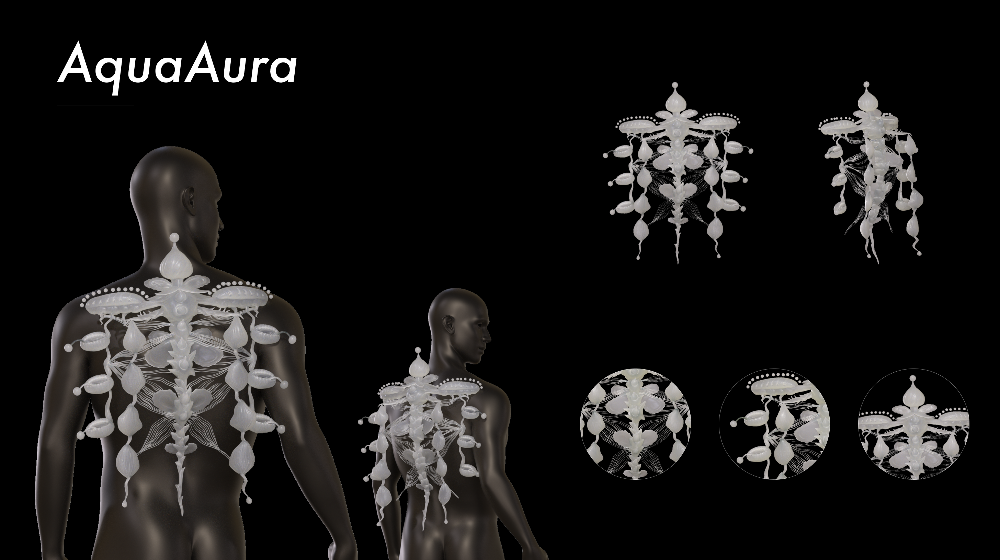
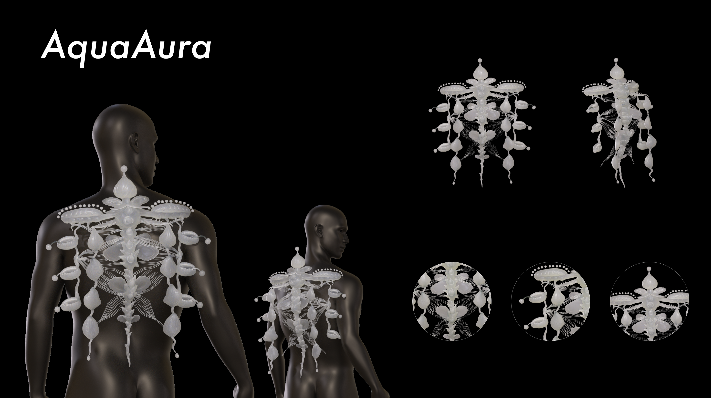

A metaverse-inspired social media app designed to bridge the gap between contestants and audiences, specifically for promoting talent competitions.
Originally designed to support the Huyou Beauty Contest, this project evolved into a broader exploration of how digital platforms can enhance talent competitions. While traditional competitions offer structured performances, they often lack real-time interaction, limiting audience engagement beyond passive viewing and simple voting.
To address this, we propose a metaverse-inspired social media app that transforms talent competitions into an interactive experience. By integrating real-time engagement, exclusive content, and monetization opportunities, the platform aims to strengthen audience-contestant connections and modernize competition formats for the digital era.

Embedded within this vision is "Organisms Utopia," a speculative design endeavor exploring a groundbreaking paradigm of symbiosis between humanity and Earth's biosphere underwater. It envisions a harmonious symbiotic relationship between humans and the diverse array of life forms on our planet. This project delves into the potential of a utopian future where life flourishes within balanced ecosystems, illustrating how symbiosis between humans and nature can redefine our relationship with the Earth, fostering a harmonious coexistence that benefits all inhabitants of our planet.
In this new utopian world, certain organisms have gradually emerged that can establish a symbiotic relationship with the new oceanic humans. They grow in different habitats in the ocean, each with its own unique characteristics. These organisms, while endowing the new oceanic humans with different abilities, also fulfill some of their needs from oceanic human.
"Organisms Utopia" employs wearable art as a medium, utilizing cutting-edge technologies such as 3D printing, heat-shrinkable sheets, and UV resin to handcraft experimental components for wearable art pieces. These art pieces are meticulously designed to be worn on the head, shoulders, arms, and hands, equipped with various sensors to simulate the sensory experiences of future underwater organisms parasitizing humans. The project aims to convey visual and emotional experiences to its audience, sparking profound reflections and discussions on the relationship between natural organisms and human existence.
Here is the inception of my ideas: initial sketches that mark the beginning of my creative journey.

Below are sketches and profiles of four envisioned future marine organisms.


Below are conceptual 3D models of four future marine organisms, along with renderings depicting their symbiotic integration with humans.


 

Below is a conceptual map illustrating the primary habitat distributions of four envisioned future marine species.

Sustainability is prioritized in the "Organisms Utopia" project through the consideration of material selection, production processes, and design lifecycle. Sustainable materials such as biodegradable polymers or recycled plastics are selected for 3D printing to mitigate resource dependency and minimize environmental footprint. Also, wearable art pieces are designed for durability and flexibility, adapting to diverse needs. Through these efforts, we aim to minimize our project's ecological footprint and contribute to a sustainable future.

In the evolution of the "Organisms Utopia" project, we've established collaborations with experts in the fields of biology and environmental science. They offered invaluable insights into marine biology and ecosystems, aiding our design team in comprehending the behavior, traits, and ecological context of underwater organisms, as well as essential information on parasitic relationships, symbiotic relationships, and biodiversity. This collaboration has guided the development of wearable art pieces, seamlessly integrating the authenticity of real-world ecological systems into our speculative design. Through our partnership with the fields of biology and environmental science, the "Organisms Utopia" project is poised to more accurately portray the vision of a future utopia, thus prompting profound reflections on future utopian symbiotic coexistence.
The symbiotic model introduced in the "Organisms Utopia" project is intended to evoke deep contemplation and reassessment of the interconnectedness between humanity and other organisms. Delving into this symbiotic paradigm would compel a profound reflection on the essence, significance, and potential evolution of life, also foster a profound sense of awe and responsibility towards life, urging a reexamination of the roles and contributions humanity should undertake within Earth's ecosystem.
Life transcends mere individual existence; it extends beyond personal relationships to encompass the delicate balance and stability of the entire ecosystem. As part of the ecosystem, humanity should play a role that is responsible and humble. Humans have a duty to protect and preserve the planet's biodiversity and ecosystems to ensure sustainable development for the future. This entails respecting the power and influence of nature and striving to coexist harmoniously with it, rather than attempting to dominate and control it. By recognizing and honoring nature's intrinsic value, humans can establish a symbiotic relationship with the natural world, thus contributing to the maintenance of the balance and stability of Earth's ecosystems.
The challenges of the real world compound the complexity of realizing the utopian vision where humanity and nature coexist harmoniously, mutually dependent within an ideal ecosystem. Whether humanity can progressively establish symbiotic relationships with nature in the future through collective efforts such as shifting values, embracing sustainable practices, and leveraging technological innovation remains uncertain. However, what is certain is that our contemplation and yearning for this utopian future will undoubtedly underpin a more balanced and harmonious coexistence between humans and nature. As designers, we consistently act as trailblazers along this trajectory...